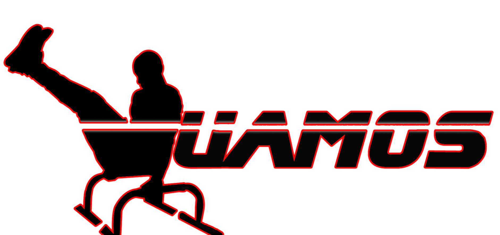

Prueba de Tren superior
1. Flexiones/Lagartijas
Las flexiones de brazos son un ejercicio muy común en cualquier disciplina deportiva, normalmente se utiliza para mejorar la condición física y poner a tono los músculos del tren superior. ¿Estás listo para la prueba?, VAMOS...